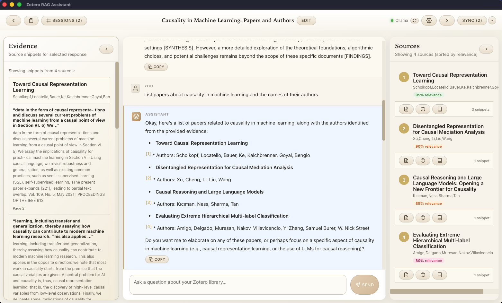
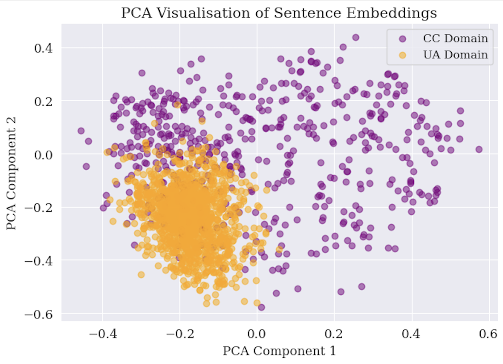
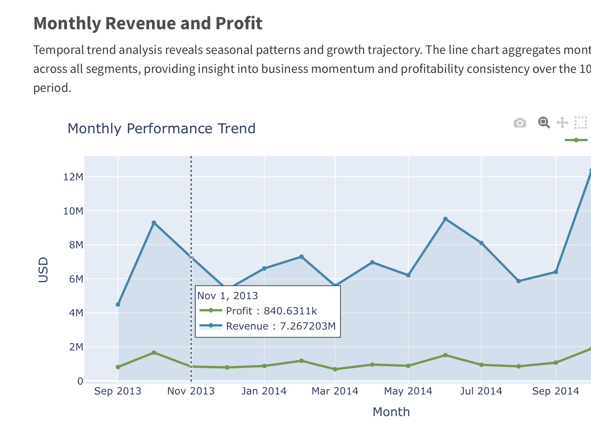

I specialise in model diagnostics, applied machine learning theory, data visualisation and code-based typesetting. I study why models degrade in production, build RAG systems through rigorous retrieval optimisation, and develop publication-grade analytics using reproducible, code-based workflows.
Through my company, Quiet Signals Lab, I design transparent and robust tech products for both business and research contexts.
Your model degrades in production, but why? I systematically audit your model and data to identify failure modes—diagnosing distribution shifts, data quality issues, and what patterns your model actually learned. Through controlled ablation studies, I isolate which factors matter most.
Deliverables:
I design and build automated reporting pipelines using Quarto that transform your data into publication-quality reports and dashboards. Reports are reproducible, version-controlled, and easy to maintain—no locked files, no manual updates. This scales analytics without hiring a full-time team.
Deliverables:
I build RAG systems with proven strategies to minimise hallucination. This means getting retrieval right—sentence-aware chunking, semantic reranking, strict generation constraints—so every answer cites its sources. Backend uses Python (FastAPI) and local or cloud vector storage (ChromaDB), supporting both local models (Ollama) and commercial providers (OpenAI, Mistral).
Deliverables:

Desktop app for chatting with your Zotero library using LLMs. Get cited answers from your research with semantic search and source transparency.
View on GitHub →
Research on improving model robustness for propaganda detection through multi-task learning. Addresses distribution shifts in persuasion detection tasks.
View on GitHub →
Real-time analytics dashboard for tracking sales performance, revenue metrics, and key business indicators.
View Dashboard →I avoid one-size-fits-all approaches. Every project gets the balance between state-of-the-art techniques and practical, maintainable solutions that fit your constraints.